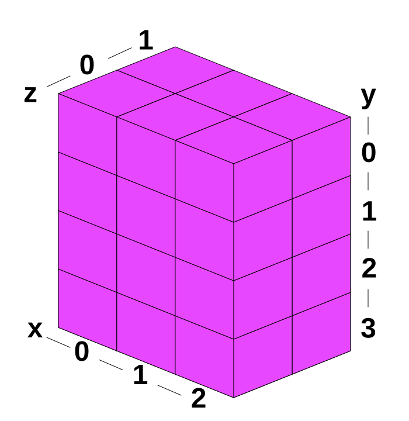
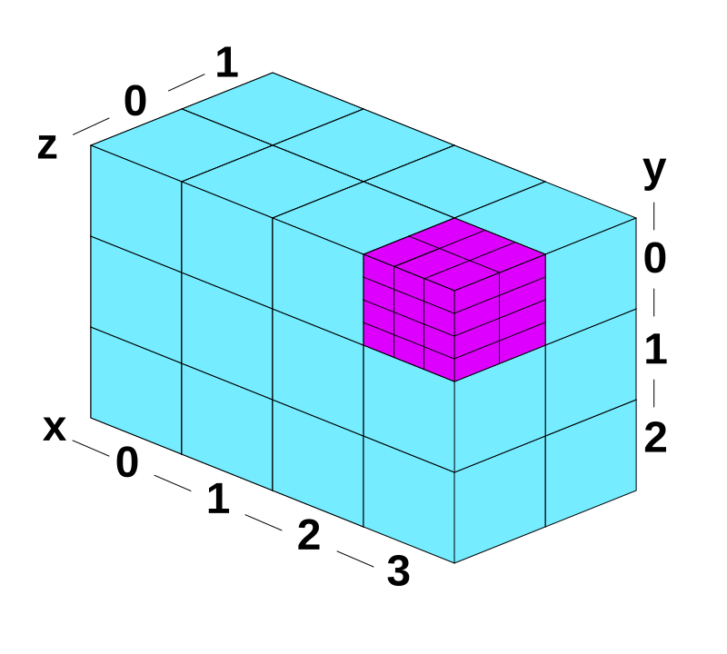

本文是基础理论文章的续篇。我们将从计算着色器的一些基础知识开始，然后逐步深入到解决实际问题的示例中。
在上一篇文章中，我们实现了一个非常简单的计算着色器，它将数字原地翻倍。
以下是着色器代码
@group(0) @binding(0) var<storage, read_write> data: array<f32>;
@compute @workgroup_size(1) fn computeSomething(
@builtin(global_invocation_id) id: vec3<u32>
) {
let i = id.x;
data[i] = data[i] * 2.0;
}
然后我们实际上是这样运行计算着色器的
... pass.dispatchWorkgroups(count);
接下来我们需要讲解 workgroup（工作小组）的定义。
你可以把 workgroup 看作是一小组并行运行的线程集合。你需要在 WGSL 中静态定义 workgroup 的大小。Workgroup 的大小是三维的，但默认为 1，所以我们的 @workgroup_size(1) 等同于 @workgroup_size(1, 1, 1)。
如果我们定义一个 workgroup 为 @workgroup_size(3, 4, 2)，那么我们实际上定义的是 3 * 4 * 2 = 24 个线程，或者说是一个 24 线程的 workgroup。

local_invocation_id然后如果我们调用 pass.dispatchWorkgroups(4, 3, 2)，意思是说，执行一个包含 24 个线程的 workgroup，执行 4 * 3 * 2 = 24 次，总共 576 个线程。

workgroup_id在每个计算着色器的"调用"中，以下内置变量是可用的。
local_invocation_id：该线程在 workgroup 内的 ID
参见上图。
workgroup_id：该 workgroup 的 ID。
workgroup 中的每个线程都会有相同的 workgroup_id。 参见上图。
global_invocation_id：每个线程的唯一 ID
你可以把它理解为
global_invocation_id = workgroup_id * workgroup_size + local_invocation_id
num_workgroups：传递给 pass.dispatchWorkgroups 的参数
local_invocation_index：该线程的线性化 ID
你可以把它理解为
rowSize = workgroup_size.x
sliceSize = rowSize * workgroup_size.y
local_invocation_index =
local_invocation_id.x +
local_invocation_id.y * rowSize +
local_invocation_id.z * sliceSize
让我们写一个示例来使用这些值。我们将把每个调用中的值写入缓冲区，然后打印出来
以下是着色器代码
const dispatchCount = [4, 3, 2];
const workgroupSize = [2, 3, 4];
// 将数组的所有元素相乘
const arrayProd = arr => arr.reduce((a, b) => a * b);
const numThreadsPerWorkgroup = arrayProd(workgroupSize);
const code = `
// 注意!: vec3u 按 4 字节对齐
@group(0) @binding(0) var<storage, read_write> workgroupResult: array<vec3u>;
@group(0) @binding(1) var<storage, read_write> localResult: array<vec3u>;
@group(0) @binding(2) var<storage, read_write> globalResult: array<vec3u>;
@compute @workgroup_size(${workgroupSize}) fn computeSomething(
@builtin(workgroup_id) workgroup_id : vec3<u32>,
@builtin(local_invocation_id) local_invocation_id : vec3<u32>,
@builtin(global_invocation_id) global_invocation_id : vec3<u32>,
@builtin(local_invocation_index) local_invocation_index: u32,
@builtin(num_workgroups) num_workgroups: vec3<u32>
) {
// workgroup_index 类似于 local_invocation_index，但它是针对
// workgroup 而不是 workgroup 内的线程。
// 它不是内置变量，所以我们需要自己计算。
let workgroup_index =
workgroup_id.x +
workgroup_id.y * num_workgroups.x +
workgroup_id.z * num_workgroups.x * num_workgroups.y;
// global_invocation_index 类似于 local_invocation_index
// 只不过它是跨所有分发的 workgroup 的所有调用线性化的。
// 它不是内置变量，所以我们需要自己计算。
let global_invocation_index =
workgroup_index * ${numThreadsPerWorkgroup} +
local_invocation_index;
// 现在我们可以把这些内置变量的值写入缓冲区。
workgroupResult[global_invocation_index] = workgroup_id;
localResult[global_invocation_index] = local_invocation_id;
globalResult[global_invocation_index] = global_invocation_id;
`;
我们使用 JavaScript 模板字符串，以便从 JavaScript 变量 workgroupSize 中设置 workgroup 大小。这样最终会被硬编码到着色器中。
现在我们有了着色器，可以创建 3 个缓冲区来存储这些结果。
const numWorkgroups = arrayProd(dispatchCount);
const numResults = numWorkgroups * numThreadsPerWorkgroup;
const size = numResults * 4 * 4; // vec3f * u32
let usage = GPUBufferUsage.STORAGE | GPUBufferUsage.COPY_SRC;
const workgroupBuffer = device.createBuffer({size, usage});
const localBuffer = device.createBuffer({size, usage});
const globalBuffer = device.createBuffer({size, usage});
正如我们之前指出的，我们不能将存储缓冲区映射到 JavaScript，所以需要一些缓冲区来映射。我们将把结果从存储缓冲区复制到这些可映射的结果缓冲区，然后再读取结果。
usage = GPUBufferUsage.MAP_READ | GPUBufferUsage.COPY_DST;
const workgroupReadBuffer = device.createBuffer({size, usage});
const localReadBuffer = device.createBuffer({size, usage});
const globalReadBuffer = device.createBuffer({size, usage});
我们创建一个 bind group 来绑定所有存储缓冲区
const bindGroup = device.createBindGroup({
layout: pipeline.getBindGroupLayout(0),
entries: [
{ binding: 0, resource: workgroupBuffer },
{ binding: 1, resource: localBuffer },
{ binding: 2, resource: globalBuffer },
],
});
我们启动一个编码器和一个计算通道编码器，与之前的示例相同，然后添加运行计算着色器的命令。
// 编码执行计算的命令
const encoder = device.createCommandEncoder({ label: 'compute builtin encoder' });
const pass = encoder.beginComputePass({ label: 'compute builtin pass' });
pass.setPipeline(pipeline);
pass.setBindGroup(0, bindGroup);
pass.dispatchWorkgroups(...dispatchCount);
pass.end();
我们需要把结果从存储缓冲区复制到可映射的结果缓冲区。
encoder.copyBufferToBuffer(workgroupBuffer, 0, workgroupReadBuffer, 0, size); encoder.copyBufferToBuffer(localBuffer, 0, localReadBuffer, 0, size); encoder.copyBufferToBuffer(globalBuffer, 0, globalReadBuffer, 0, size);
然后结束编码器并提交命令缓冲区。
// 完成编码并提交命令 const commandBuffer = encoder.finish(); device.queue.submit([commandBuffer]);
和之前一样，要读取结果，我们需要映射缓冲区，一旦它们准备好了，就可以获取它们内容的类型化数组视图。
// 读取结果
await Promise.all([
workgroupReadBuffer.mapAsync(GPUMapMode.READ),
localReadBuffer.mapAsync(GPUMapMode.READ),
globalReadBuffer.mapAsync(GPUMapMode.READ),
]);
const workgroup = new Uint32Array(workgroupReadBuffer.getMappedRange());
const local = new Uint32Array(localReadBuffer.getMappedRange());
const global = new Uint32Array(globalReadBuffer.getMappedRange());
重要提示：这里我们映射了 3 个缓冲区，并使用
await Promise.all来等待它们全部就绪。不能只等待最后一个缓冲区。你必须等待所有 3 个缓冲区。
最后我们可以打印出来
const get3 = (arr, i) => {
const off = i * 4;
return `${arr[off]}, ${arr[off + 1]}, ${arr[off + 2]}`;
};
for (let i = 0; i < numResults; ++i) {
if (i % numThreadsPerWorkgroup === 0) {
log(`\
---------------------------------------
global local global dispatch: ${i / numThreadsPerWorkgroup}
invoc. workgroup invoc. invoc.
index id id id
---------------------------------------`);
}
log(` ${i.toString().padStart(3)}: ${get3(workgroup, i)} ${get3(local, i)} ${get3(global, i)}`)
}
}
function log(...args) {
const elem = document.createElement('pre');
elem.textContent = args.join(' ');
document.body.appendChild(elem);
}
运行结果如下
这些内置变量通常是对于一次 pass.dispatchWorkgroups 调用，每个计算着色器线程唯一会改变输入，所以要有效地设计一个计算着色器函数，你需要弄清楚如何使用这些 ..._id 内置变量作为输入来实现你想要的功能。
你应该把工作组设成多大？这个问题经常出现。为什么不总是使用 @workgroup_size(1, 1, 1)，然后只需要通过 pass.dispatchWorkgroups 的参数来决定运行多少次迭代，这样会更简单。
原因是 workgroup 内的多个线程比单独分发运行得更快。
一方面，workgroup 内的线程通常以锁步（lockstep）方式运行，所以同时运行 16 个和运行 1 个的速度是一样的。
WebGPU 的默认限制如下
maxComputeInvocationsPerWorkgroup：256maxComputeWorkgroupSizeX：256maxComputeWorkgroupSizeY：256maxComputeWorkgroupSizeZ：64如你所见，第一个限制 maxComputeInvocationsPerWorkgroup 意味着 @workgroup_size 的三个参数相乘不能大于 256。换句话说
@workgroup_size(256, 1, 1) // 可行 @workgroup_size(128, 2, 1) // 可行 @workgroup_size(16, 16, 1) // 可行 @workgroup_size(16, 16, 2) // 不可行 16 * 16 * 2 = 512
遗憾的是，最佳大小因 GPU 而异，WebGPU 无法提供这些信息。 WebGPU 的一般建议是选择 64 的工作组大小，除非你有特定的理由选择其他大小。显然大多数 GPU 可以高效地以 64 为单位锁步运行。如果选择的数字更高，而 GPU 无法将其作为快速路径处理，就会选择较慢的路径。反之，如果你选择的数字低于 GPU 的能力，可能无法获得最佳性能。
WebGPU 中的一个常见错误是没有处理竞态条件。竞态条件是指多个线程同时运行，它们实际上在争夺谁先或最后完成。
假设你有这个计算着色器
@group(0) @binding(0) var<storage, read_write> result: array<f32>;
@compute @workgroup_size(32) fn computeSomething(
@builtin(local_invocation_id) local_invocation_id : vec3<u32>,
) {
result[0] = local_invocation_id.x;
`;
如果这不容易理解，这里有一个类似的 JavaScript 代码
const result = [];
for (let i = 0; i < 32; ++i) {
result[0] = i;
}
在 JavaScript 的情况下，代码运行后，result[0] 显然是 31。但在计算着色器中，着色器的全部 32 个迭代都是并行运行的。最后完成的那个线程的值会留在 result[0] 中。哪个先运行、哪个最后完成是不确定的。
根据规范：
WebGPU 不提供以下保证：
不同 workgroup 的调用是否同时执行。也就是说，你不能假设一次只执行一个 workgroup。
一旦 workgroup 的调用开始执行，其他 workgroup 是否被阻止执行。也就是说，你不能假设一次只有一个 workgroup 在执行。在 workgroup 执行期间，实现可以选择同时执行其他 workgroup，或者其他排队但未被阻止的工作。
某个特定 workgroup 的调用是否在另一个 workgroup 的调用之前开始执行。也就是说，你不能假设 workgroup 按特定顺序启动。
我们将在以后的示例中介绍一些处理这个问题的方法。目前，我们上面的两个示例都没有竞态条件，因为计算着色器的每次迭代所做的操作都不受其他迭代的影响。
接下来：计算着色器示例 - 图像直方图